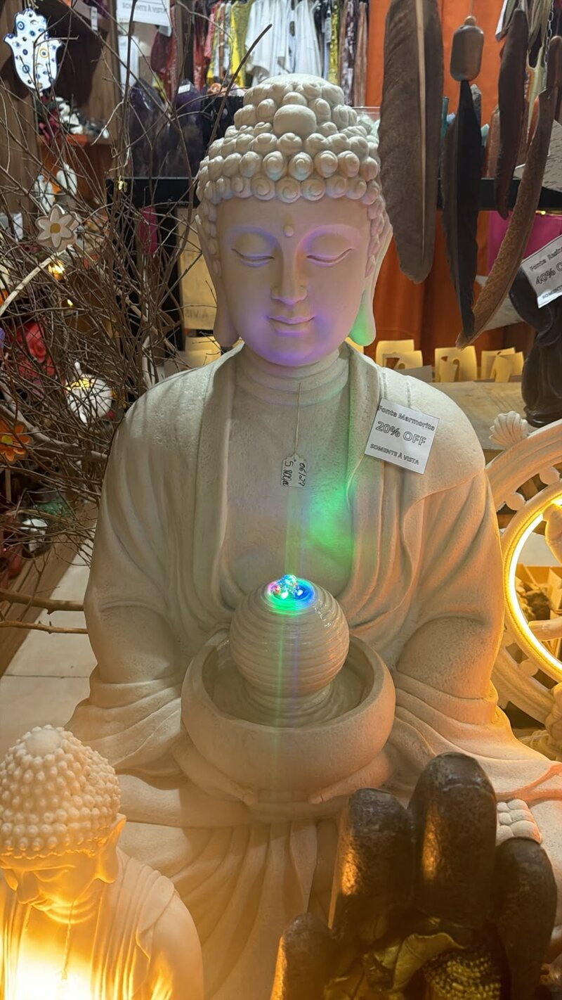

Uma vaquinha simples entre a Sangha
Há muito tempo o Mokugen San deseja colocar uma imagem grande de Buda no jardim do templo. Várias tentativas anteriores não se concretizaram.
Encontramos esta fonte de Buda em liquidação no Mercado Central. O valor caiu de R$ 5.800 para R$ 3.500. A ideia é reunir a Sangha para trazê-la ao templo.
Faltam R$ 2.250 para atingir a meta.
Os valores acima são apenas de exemplo. Depois da integração com a planilha, eles serão atualizados automaticamente.
Faça um Pix com o valor que desejar e, se quiser, avise no grupo ou marque seu nome na planilha.
Preferência por chave do templo ou de pessoa de confiança da Sangha.
Toda a movimentação fica registrada em uma planilha compartilhada. Qualquer membro da Sangha pode acompanhar quanto já entrou e quanto ainda falta.